Srinivasulu G
I build systems where full-stack engineering, machine learning and security meet — from NASA-nominated space-weather storytelling and clinical healthtech screening to enterprise agricultural provenance.
- CGPA
- 0
- NASA Nominations
- 0
- Certifications
- 0
Bengaluru, India
B.E. CSE ’27 · BGSCET · Ex-IISc CYSECK
01 — About
Engineering that survives
contact with reality.
I started in a diploma programme at IR Polytechnic (9.4 CGPA) and carried that momentum into a B.E. in Computer Science at BGS College of Engineering & Technology, where I hold an 8.6 CGPA.
At CYSECK, IISc Bangalore I worked inside a research environment on ML-based threat detection, network traffic monitoring and firewall policy — which permanently changed how I write application code: threat model first, feature second.
Since then I've shipped a NASA Space Apps global-nominated educational platform, an algorithm visualiser used for academic training, and an OCR-driven exam duty allocation system that removed hours of manual scheduling.
Full-stack delivery
React · Django · Node · MySQL
Applied ML & CV
TensorFlow · OpenCV · MediaPipe
Security analytics
Traffic analysis · Hardening
Ship velocity
Hackathon-tested, 48h builds
🚀 Career & Innovation Roadmap
9 key milestones across academics, research & hackathons
-
01 · 2021 – 2024 3 YearsAcademic Foundation
Diploma in Computer Science & Engineering
IR Polytechnic — 9.4 CGPA (Distinction)
Foundational 3-year technical education covering data structures, object-oriented programming, operating systems, and computer network architecture.
C / C++ Java DSA 9.4 CGPA -
02 · Feb – Mar 2024 Research InternshipView Showcase ↗
Cybersecurity Intern — CySeck & IISc Bangalore
K-Tech Centre of Excellence for Cyber Security & Indian Institute of Science
Hands-on practical training in Network Engineering, SOC analysis, Blue Team defense with Kali Linux tools, and inbound/outbound firewall rule configuration.
Network Engineering SOC Analysis Blue Team Firewall Rules -
03 · 2024 – 2027 Active DegreeB.E. Undergraduate
B.E. in Computer Science & Engineering
BGS College of Engineering & Technology (BGSCET), Bengaluru — 8.6 CGPA
Pursuing Bachelor of Engineering with an 8.6 CGPA. Specializing in Full-Stack Engineering, Machine Learning, and Cloud Systems architecture.
Full-Stack Machine Learning Cloud & DevOps 8.6 CGPA -
04 · October 2024 NASA HackathonGlobal Nominee
NASA Space Apps Challenge 2024 — Global Nominee
NASA International Space Apps Challenge
Earned first Global Nominee honors for building solutions addressing real-world NASA space and Earth science telemetry datasets.
Global Nominee NASA Open Data Rapid Hackathon -
05 · October 2025 2× Global NomineeLocal Impact Award
NASA Space Apps 2025 — Global Nominee & Local Impact Award
Team SIGMA · Local Host – Chikkamagaluru, BGSCET
Shipped Stellar Stories (Space Weather Through the Eyes of Earthlings). Awarded Special Category Local Impact Award and selected as Global Nominee.
Local Impact Winner Global Nominee Team SIGMA Stellar Stories -
06 · 2025 Institutional EventTech Volunteer
Advaya Hackathon 2025 — Tech Volunteer
BGS College of Engineering & Technology (BGSCET)
Managed end-to-end technical execution, lab setup, testing infrastructure, and live participant support across the collegiate hackathon event.
Event Execution Network Setup Participant Mentoring -
07 · 2025 HackathonParticipant
HackShastra 2K25 — Hackathon Participant
Inter-Collegiate Hackathon
Built and pitched rapid software prototypes in a high-intensity hackathon environment, focusing on resilient system design and algorithmic problem solving.
48h Build Rapid Prototyping Problem Solving -
08 · April 1 – 2, 2026 24-Hour SprintTeam Lead
Advaya 2.0 Hackathon — Participant Team Lead
Team ENCRYPTED EMPIRES · BGSCET (AgriTrust Platform)
Led team ENCRYPTED EMPIRES to build AgriTrust — smart multilingual crop transparency, soil intelligence, and QR supply-chain provenance.
Team Lead AgriTrust QR Traceability Team ENCRYPTED EMPIRES -
09 · 2026 State-LevelTeam Lead
Avinya 2.0 Hackathon — Participant Team Lead
Avinya 2.0 State-Level Innovation Hackathon
Spearheaded project vision, distributed architecture, technical implementation, and final pitch presentation as Team Lead for innovative next-generation technology solutions.
Team Lead System Architecture Innovation Pitch
CySeck & IISc Bangalore Internship
Polytechnic (Diploma) Internship Programme organized by CySeck – K-Tech Centre of Excellence for Cyber Security in collaboration with Indian Institute of Science (IISc), Bengaluru.
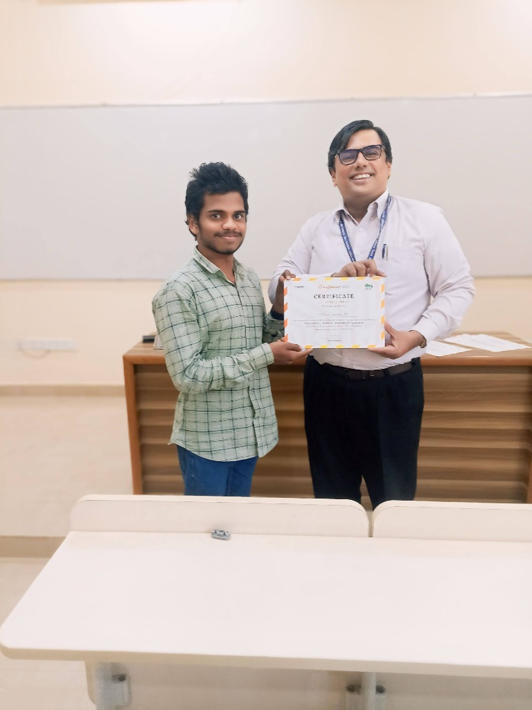
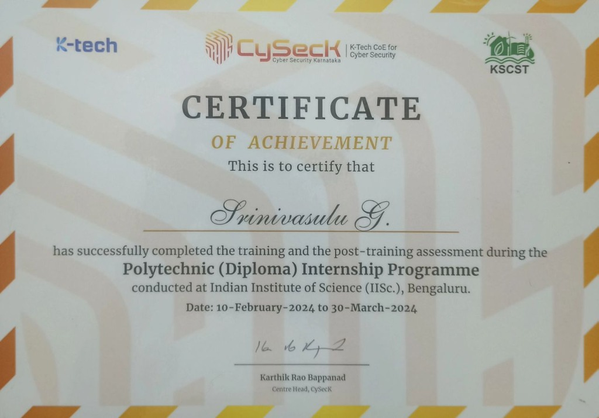
Certificate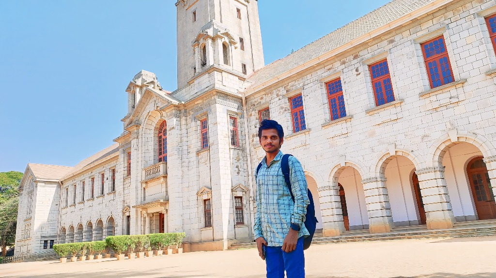
IISc Campus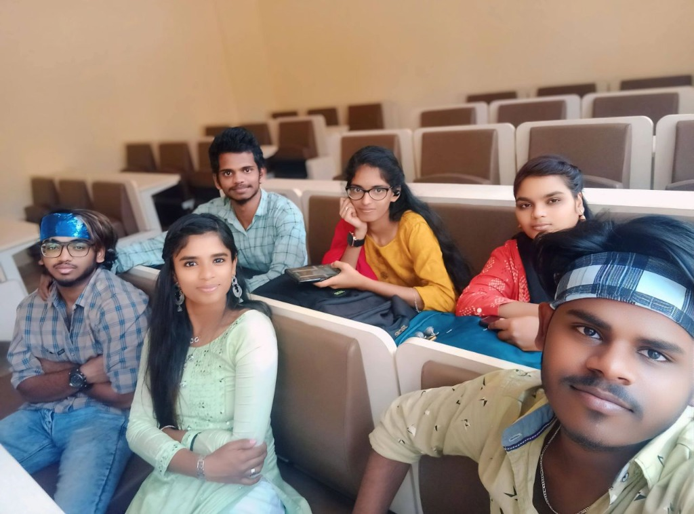
Classroom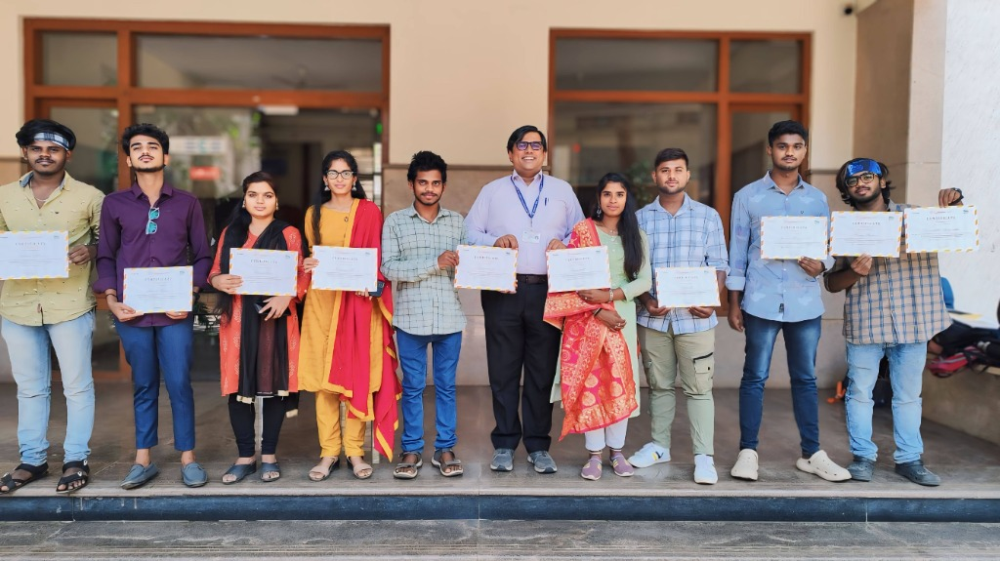
Cohort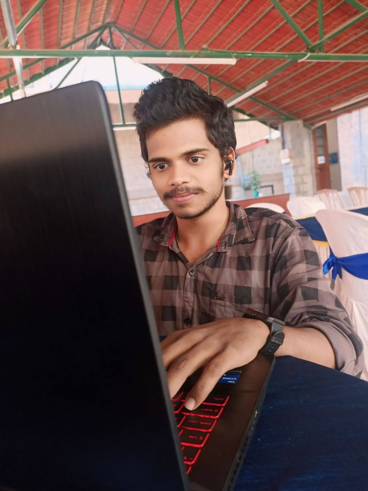
Lab Work🛡️ Polytechnic (Diploma) Internship in Cybersecurity
I’m delighted to share that I’ve successfully completed my Polytechnic (Diploma) Internship Programme organized by CySeck – K-Tech Centre of Excellence for Cyber Security, in collaboration with IISc Bangalore (Indian Institute of Science), held from 10 February 2024 to 30 March 2024.
⚡ Hands-On Practical Knowledge Gained:
Protocol analysis, network topology inspection, and secure communications modeling.
Security Operations Center triage, log monitoring, and anomaly detection workflows.
Defensive posture, vulnerability assessment, and threat hunting using Kali Linux tools.
Inbound & outbound rule management, access control policies, and packet filtering.
These real-time experiences and projects have strengthened my understanding of cybersecurity operations, network defense strategies, and incident response techniques.
🙏 Mentorship & Continuous Guidance:
A heartfelt thank you to Karthik Rao Bappanad (Centre Head of CySeck), CySeck, IISc Bangalore, and my college IR Polytechnic for providing such a valuable learning platform and continuous guidance throughout this journey.
02 — Selected work
Seven case studies, shipped and live.
03 — Toolkit
The stack behind the work.
04 — Experience
Where I've worked.
Cybersecurity Intern
CYSECK — Centre of Excellence in Cyber Security, IISc Bangalore
- Analyzed ML-based threat-detection paradigms and system security optimization inside a research environment.
- Monitored network traffic to proactively identify and mitigate potential vulnerabilities.
- Worked hands-on with network protocols, servers and firewall rule design.
- Practised ethical-hacking methodology on deliberately vulnerable machines.
Technical Volunteer — Advaya Hackathon 2025
InstitutionalRan technical execution and participant support for the institutional hackathon at BGSCET.
Hackathon Engineering & Innovation
CompetitionsCore developer across NASA Space Apps (Team Sigma · 2× Global Nominee), Advaya 2.0 24h Hackathon (Team ENCRYPTED EMPIRES · AgriTrust), and Hackshastra.
05 — Achievements & Contributions
Recognition, credentials & contributions.
Academic, Hackathons & Institutional Contributions
Hackathon Innovations, Exhibitions & Technical Mentorship
NASA International Space Apps Challenge 2025 — Global Nominee & Local Impact Award
Organized by NASA, IEEE & BGS College of Engineering and Technology (BGS-CET) · October 7th & 8th, 2025 · Bengaluru
Team SIGMA: Mayur M, Yogesh Ganapati Naik, Rakesh N Gowda & Srinivasulu G
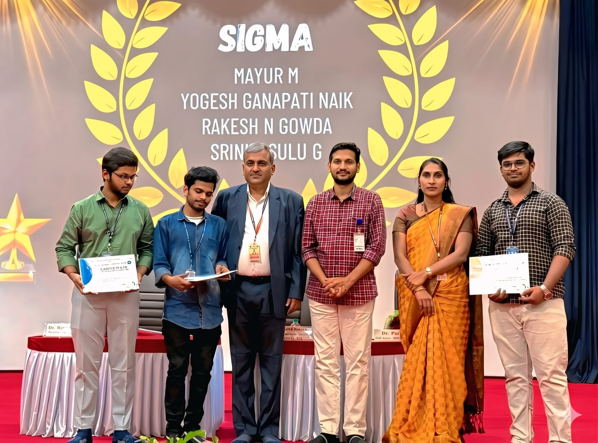
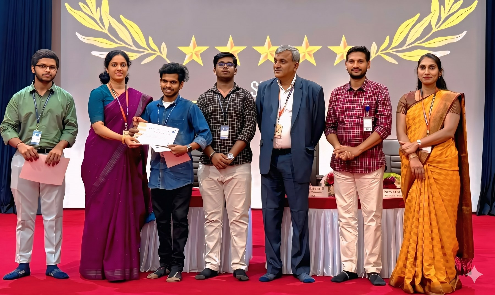
Award Handover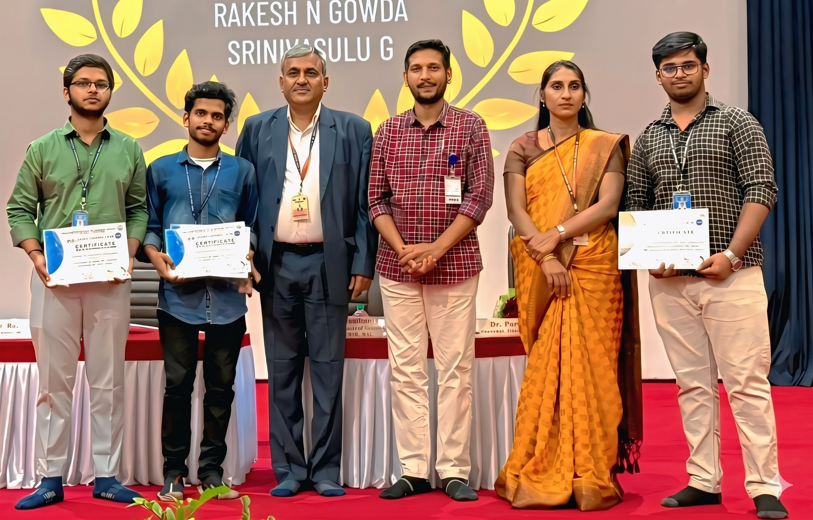
Ceremony Stage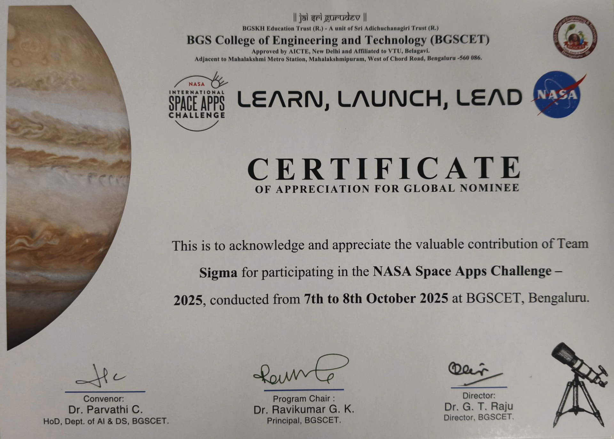
Global Nominee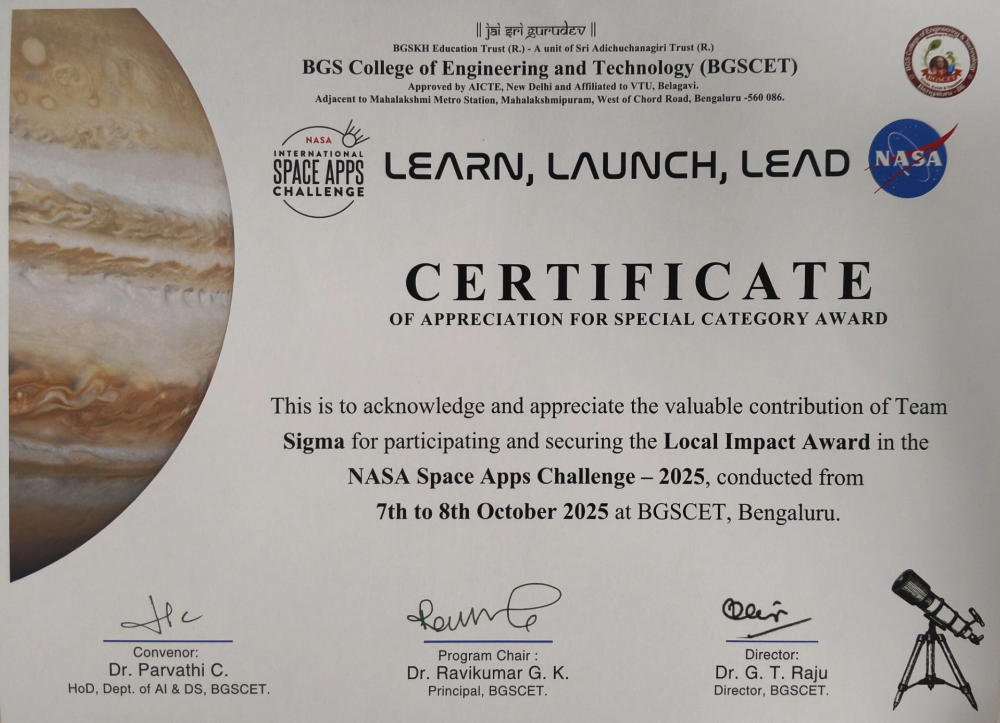
Local Impact🌍🚀 Honoured to be a Global Nominee for the NASA International Space Apps Challenge 2025! 🚀🌍
I’m thrilled to share that our team SIGMA from BGS College of Engineering and Technology (BGS-CET) has been selected as a Global Nominee in the NASA Space Apps Challenge 2025, proudly representing the Local Host – Chikkamagaluru.
Participating in this global hackathon was an incredible experience that allowed us to learn, innovate, and collaborate on real-world space and Earth challenges. Our project, Stellar Stories — Space Weather Through the Eyes of Earthlings, was recognized for its Local Impact, and this journey has truly strengthened our passion for technology and innovation.
🛰️ Project Recognition: Stellar Stories
- ✓NASA Open Telemetry & Heliophysics Data Integration
- ✓Cinematic solar flare & geomagnetic storm visualizations
- ✓Interactive chapter-based Earthling narrative flow
- ✓Awarded Special Category: Local Impact Award
- ✓Selected as Global Nominee representing Local Host – Chikkamagaluru
🙏 Institutional Guidance & Gratitude:
A heartfelt thank you to our Principal Dr. Ravikumar G. K and HOD Dr. Manjula G for their continuous guidance and encouragement. Grateful to Convenor Dr. Parvathi C, Director Dr. G. T. Raju, NASA, IEEE, and the entire organizing team at BGS-CET for providing such an inspiring platform.
“Participating in this global hackathon allowed us to learn, innovate, and collaborate on real-world space and Earth challenges. This journey has truly strengthened our passion for technology and innovation.”
- Recognition
- Global Nominee
- Local Host
- Chikkamagaluru
- Team
- SIGMA (4 Members)
Advaya 2.0 Hackathon — AgriTrust: Smart Crop Transparency & Supply Chain Traceability Platform
Organized by BGSCET (BGS College of Engineering and Technology) · April 1st & 2nd, 2026 · Bengaluru
Team ENCRYPTED EMPIRES with teammates Yogesh Naik & Mayur M
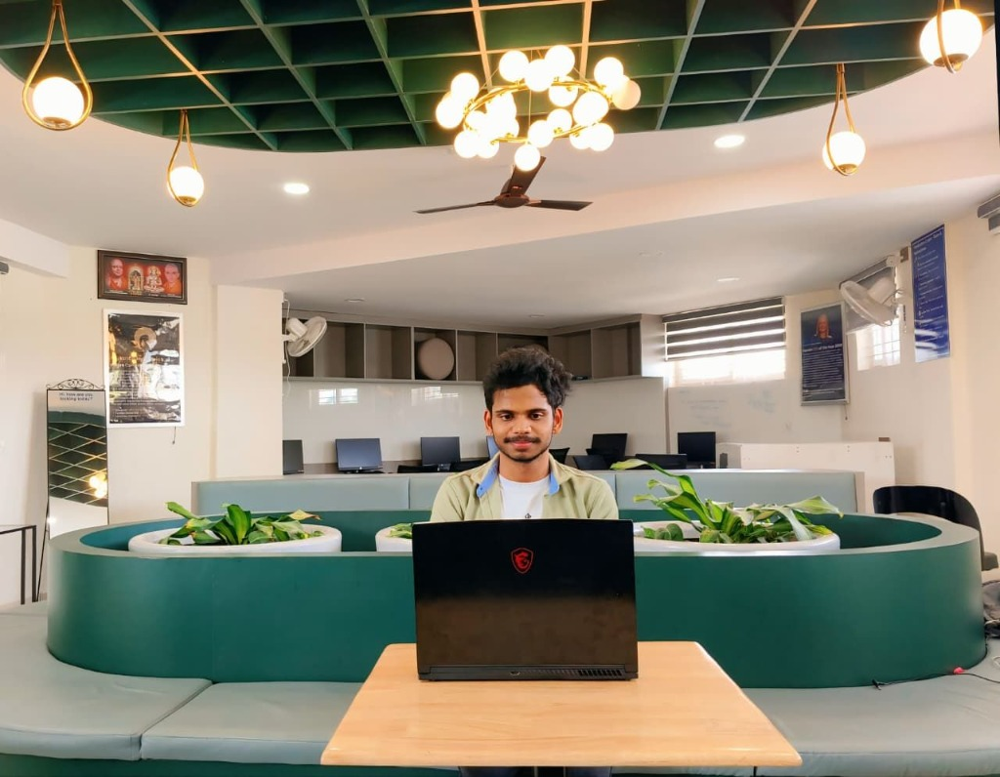
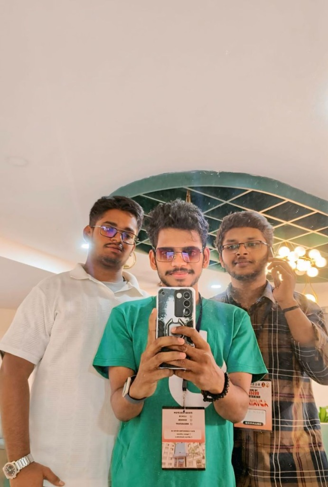
Team Selfie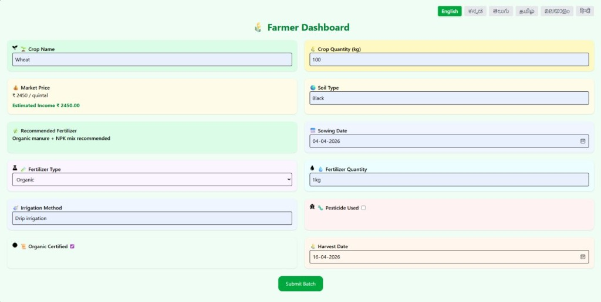
Dashboard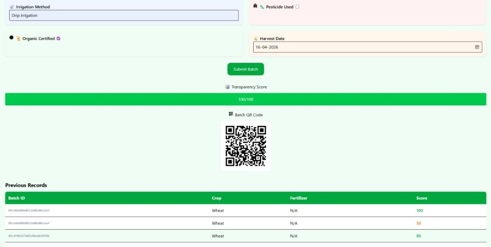
Batch QR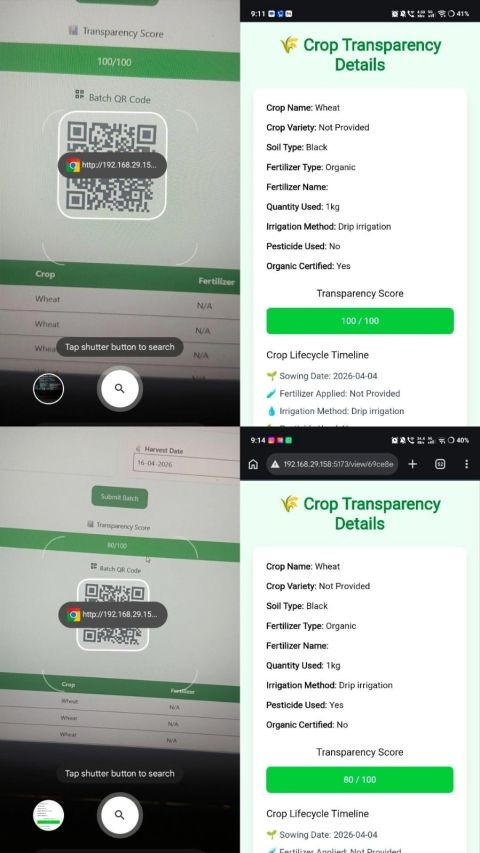
Mobile ScanI’m happy to share that I participated in the 24-hour Advaya 2.0 Hackathon, organized by BGS College of Engineering and Technology (BGSCET) on April 1st and 2nd, 2026.
Along with my team ENCRYPTED EMPIRES, and teammates Yogesh Naik and Mayur M, we presented our project: 🌾 AgriTrust – Smart Crop Transparency & Supply Chain Traceability Platform.
AgriTrust is a full-stack web application designed to improve transparency between farmers, distributors, and consumers through QR-based crop lifecycle tracking.
🔍 Key Features of AgriTrust:
- ✓Crop lifecycle tracking from farm to consumer
- ✓Fertilizer, irrigation & pesticide usage monitoring
- ✓Transparency score generation (0–100) based on cultivation practices
- ✓Distributor logistics tracking (warehouse, temperature, transport mode)
- ✓QR-based crop verification system for consumers
- ✓Smart fertilizer recommendation support
- ✓Crop market price estimation for farmers
🌐 Inclusive & Farmer-Friendly Design:
- •Multi-language support: Available across regional languages for seamless accessibility
- •Voice input feature: Empowers farmers to operate the system effortlessly without literacy barriers
- •Icon-driven & colorful UI: Optimized for rapid visual clarity and usability in rural contexts
“Participating in this 24-hour hackathon was a great learning experience that strengthened our team collaboration, problem-solving skills, and full-stack development experience while working on a real-world agriculture transparency solution.”
- Event
- Advaya 2.0 (24h)
- Platform Host
- BGSCET
- Team
- ENCRYPTED EMPIRES
Arohan 2.0 Project Exhibition — Exam Duty Allocation System
Organized by BGSCET (BGS College of Engineering & Technology) · Bengaluru
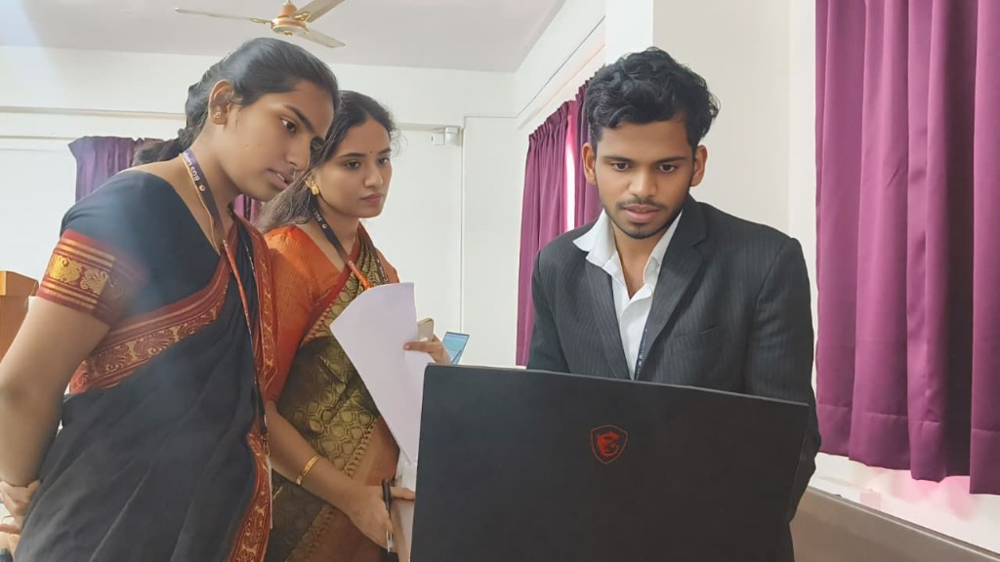
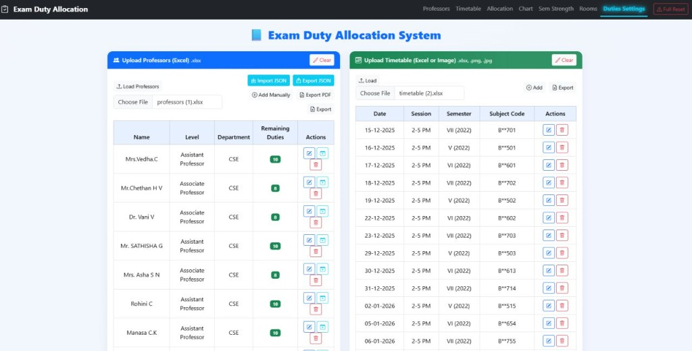
System UI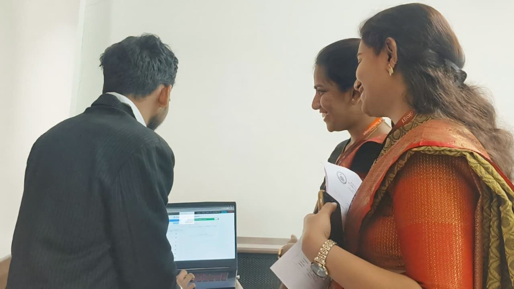
Faculty Evaluation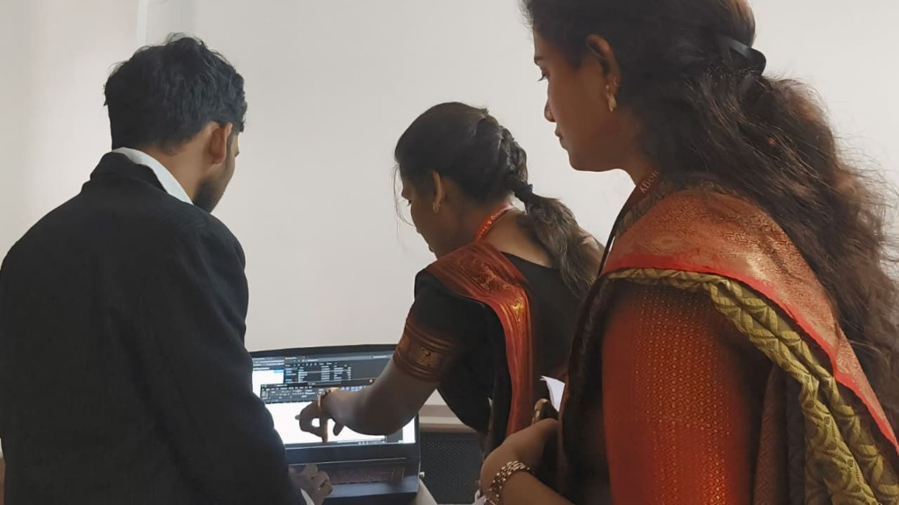
Workflow ReviewRecently, Arohan 2.0, a premier project exhibition event organized by BGSCET, gave us a wonderful opportunity to showcase our innovations to departmental evaluators and faculty.
I presented my mini-project “Exam Duty Allocation”, where every single step—from uploading the necessary details (professors' roster and timetable sheets) to exporting the final verified duty allocation—has been designed with precision and fine-tuning.
The software eliminates manual clerical errors and timetable scheduling friction by automatically balancing duties across Assistant and Associate Professors, enforcing zero slot clashes, and enabling one-click exports into official distribution formats.
“I am truly grateful to BGSCET for providing this platform that helped us enhance our knowledge, display our technical skills, and validate real-world institutional impact.”
- Event
- Arohan 2.0
- Platform
- BGSCET
- Core Focus
- Precision & Fine-Tuning
Interactive AI Search Algorithms Session with First-Year CSE–A Students
BGS College of Engineering & Technology (BGSCET) · Bengaluru
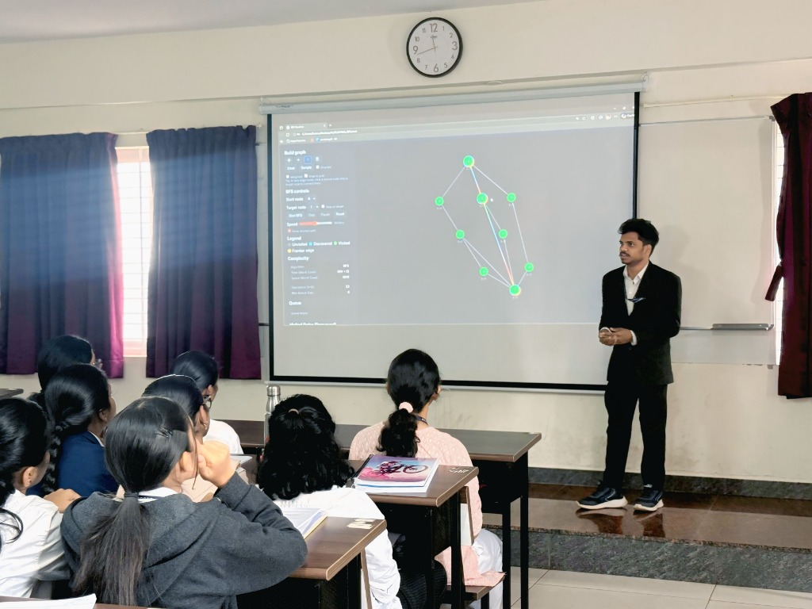
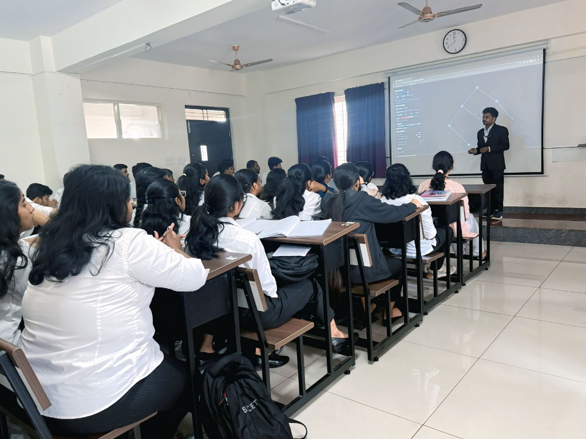
Engaged Classroom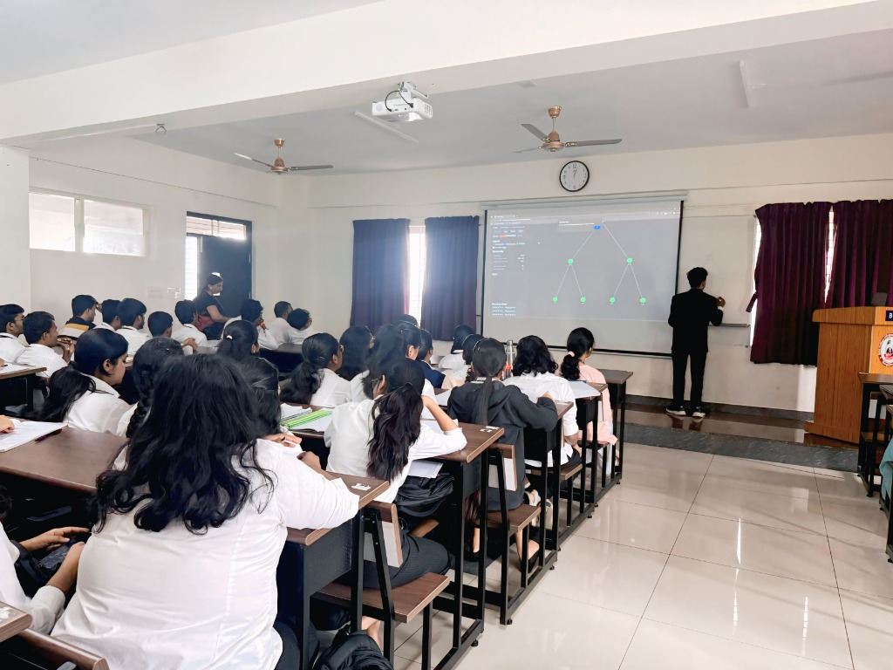
Lecture Hall CohortI recently had the opportunity to interact with the first-year CSE–A students of BGSCET, where I conducted an engaging session on core AI search algorithms — BFS, DFS, DLS, and IDDFS.
Instead of relying on a traditional static PowerPoint presentation, I developed and leveraged interactive web applications that enabled students to input custom nodes, connect edges dynamically, and visualize the step-by-step internal working flow of each algorithm in real-time.
This hands-on, practical approach helped them intuitively grasp the underlying data structures (queues, stacks, visited sets), real-time applications, algorithmic pseudocode, and performance measures.
“This session was impactful in two ways: it allowed me to share practical engineering knowledge with juniors while also enhancing my communication, presentation, and pedagogical skills.”
- Audience
- 1st-Year CSE–A
- Methodology
- Interactive vs PPT
- Domain
- AI Search Algorithms
Hackathons
- NASA International Space Apps Challenge 2025 — Global Nominee & Local Impact Award with Team SIGMA (Representing Local Host – Chikkamagaluru, BGS-CET).
- Advaya Hackathon 2.0 (April 1–2, 2026) — 24-hour sprint by BGSCET. Presented AgriTrust (Smart Crop Transparency & Supply Chain Traceability) with Team ENCRYPTED EMPIRES.
- Hackshastra — agriculture-scale solution designed for industry-level operations.
Certifications & Training
06 — Open source
github.com/ss6531438
Visit profile ↗Contribution activity
Last 26 weeks
07 — Words
What collaborators say.
* Reference notes from hackathon teammates and peers — formal references available on request.
08 — Contact
Let's build something
amazing.
Hiring, collaborating, or just curious about one of the case studies above — my inbox is genuinely open.